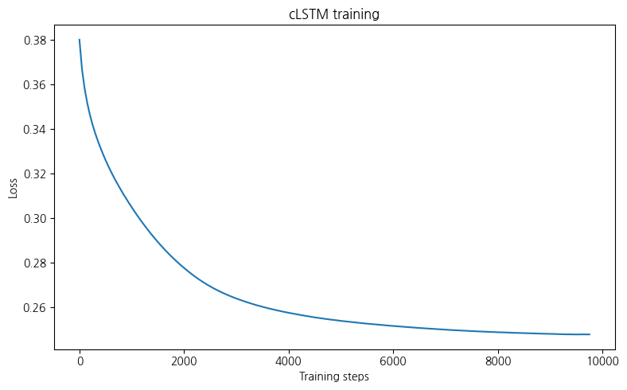
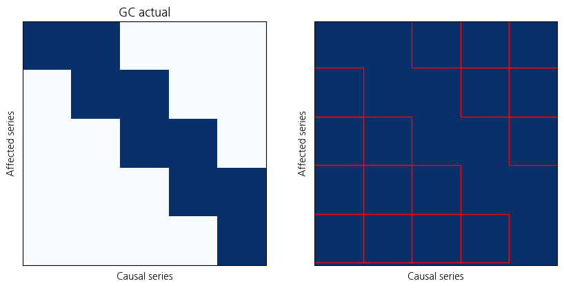

import torch
import numpy as np
import matplotlib.pyplot as plt
from synthetic import simulate_var
from models.cmlp import cMLP, cMLPSparse, train_model_ista, train_unregularizedimport pandas as pd# For GPU acceleration
device = torch.device('cuda')# Simulate data
#X_np, beta, GC = simulate_var(p=10, T=1000, lag=3)
#X = torch.tensor(X_np[np.newaxis], dtype=torch.float32, device=device)wt = pd.read_csv("weather2024.csv")wt| 일시 | 기온 | 강수량 | 풍속 | 습도 | 일사 | |
|---|---|---|---|---|---|---|
| 0 | 2024-01-01 01:00 | 3.8 | 0.0 | 1.5 | 80 | 0.0 |
| 1 | 2024-01-01 02:00 | 3.9 | 0.0 | 0.2 | 79 | 0.0 |
| 2 | 2024-01-01 03:00 | 3.5 | 0.0 | 0.4 | 84 | 0.0 |
| 3 | 2024-01-01 04:00 | 1.9 | 0.0 | 1.1 | 92 | 0.0 |
| 4 | 2024-01-01 05:00 | 1.4 | 0.0 | 1.5 | 94 | 0.0 |
| ... | ... | ... | ... | ... | ... | ... |
| 8755 | 2024-12-30 20:00 | 7.6 | 0.0 | 1.4 | 71 | 0.0 |
| 8756 | 2024-12-30 21:00 | 7.5 | 0.0 | 1.7 | 69 | 0.0 |
| 8757 | 2024-12-30 22:00 | 7.2 | 0.0 | 1.2 | 70 | 0.0 |
| 8758 | 2024-12-30 23:00 | 7.2 | 0.0 | 1.7 | 71 | 0.0 |
| 8759 | 2024-12-31 00:00 | 7.4 | 0.0 | 2.8 | 70 | 0.0 |
8760 rows × 6 columns
from sklearn.preprocessing import StandardScaler
X_np = wt.iloc[:, 1:].values
scaler = StandardScaler()
X_scaled = scaler.fit_transform(X_np)
X_np = X_scaled.astype(np.float32)
X = torch.tensor(X_np[np.newaxis], dtype=torch.float32, device=device)X = torch.tensor(X_np[np.newaxis], dtype=torch.float32, device=device)# Set up model
cmlp = cMLP(X.shape[-1], lag=5, hidden=[100]).cuda(device=device)# Train with ISTA
train_loss_list = train_model_ista(
cmlp, X, lam=0.002, lam_ridge=1e-2, lr=5e-2, penalty='H', max_iter=50000,
check_every=100)----------Iter = 100----------
Loss = 0.379958
Variable usage = 100.00%
----------Iter = 200----------
Loss = 0.366504
Variable usage = 100.00%
----------Iter = 300----------
Loss = 0.357959
Variable usage = 100.00%
----------Iter = 400----------
Loss = 0.351531
Variable usage = 100.00%
----------Iter = 500----------
Loss = 0.346289
Variable usage = 100.00%
----------Iter = 600----------
Loss = 0.341924
Variable usage = 100.00%
----------Iter = 700----------
Loss = 0.338129
Variable usage = 100.00%
----------Iter = 800----------
Loss = 0.334756
Variable usage = 100.00%
----------Iter = 900----------
Loss = 0.331626
Variable usage = 100.00%
----------Iter = 1000----------
Loss = 0.328709
Variable usage = 100.00%
----------Iter = 1100----------
Loss = 0.325968
Variable usage = 100.00%
----------Iter = 1200----------
Loss = 0.323389
Variable usage = 100.00%
----------Iter = 1300----------
Loss = 0.320968
Variable usage = 100.00%
----------Iter = 1400----------
Loss = 0.318670
Variable usage = 100.00%
----------Iter = 1500----------
Loss = 0.316470
Variable usage = 100.00%
----------Iter = 1600----------
Loss = 0.314376
Variable usage = 100.00%
----------Iter = 1700----------
Loss = 0.312334
Variable usage = 100.00%
----------Iter = 1800----------
Loss = 0.310358
Variable usage = 100.00%
----------Iter = 1900----------
Loss = 0.308462
Variable usage = 100.00%
----------Iter = 2000----------
Loss = 0.306619
Variable usage = 100.00%
----------Iter = 2100----------
Loss = 0.304820
Variable usage = 100.00%
----------Iter = 2200----------
Loss = 0.303053
Variable usage = 100.00%
----------Iter = 2300----------
Loss = 0.301335
Variable usage = 100.00%
----------Iter = 2400----------
Loss = 0.299677
Variable usage = 100.00%
----------Iter = 2500----------
Loss = 0.298070
Variable usage = 100.00%
----------Iter = 2600----------
Loss = 0.296501
Variable usage = 100.00%
----------Iter = 2700----------
Loss = 0.294969
Variable usage = 100.00%
----------Iter = 2800----------
Loss = 0.293476
Variable usage = 100.00%
----------Iter = 2900----------
Loss = 0.292024
Variable usage = 100.00%
----------Iter = 3000----------
Loss = 0.290616
Variable usage = 100.00%
----------Iter = 3100----------
Loss = 0.289244
Variable usage = 100.00%
----------Iter = 3200----------
Loss = 0.287913
Variable usage = 100.00%
----------Iter = 3300----------
Loss = 0.286624
Variable usage = 100.00%
----------Iter = 3400----------
Loss = 0.285378
Variable usage = 100.00%
----------Iter = 3500----------
Loss = 0.284173
Variable usage = 100.00%
----------Iter = 3600----------
Loss = 0.282993
Variable usage = 100.00%
----------Iter = 3700----------
Loss = 0.281854
Variable usage = 100.00%
----------Iter = 3800----------
Loss = 0.280750
Variable usage = 100.00%
----------Iter = 3900----------
Loss = 0.279678
Variable usage = 100.00%
----------Iter = 4000----------
Loss = 0.278645
Variable usage = 100.00%
----------Iter = 4100----------
Loss = 0.277644
Variable usage = 100.00%
----------Iter = 4200----------
Loss = 0.276675
Variable usage = 100.00%
----------Iter = 4300----------
Loss = 0.275716
Variable usage = 100.00%
----------Iter = 4400----------
Loss = 0.274802
Variable usage = 100.00%
----------Iter = 4500----------
Loss = 0.273929
Variable usage = 100.00%
----------Iter = 4600----------
Loss = 0.273084
Variable usage = 100.00%
----------Iter = 4700----------
Loss = 0.272277
Variable usage = 100.00%
----------Iter = 4800----------
Loss = 0.271502
Variable usage = 100.00%
----------Iter = 4900----------
Loss = 0.270757
Variable usage = 100.00%
----------Iter = 5000----------
Loss = 0.270052
Variable usage = 100.00%
----------Iter = 5100----------
Loss = 0.269368
Variable usage = 100.00%
----------Iter = 5200----------
Loss = 0.268712
Variable usage = 100.00%
----------Iter = 5300----------
Loss = 0.268086
Variable usage = 100.00%
----------Iter = 5400----------
Loss = 0.267494
Variable usage = 100.00%
----------Iter = 5500----------
Loss = 0.266921
Variable usage = 100.00%
----------Iter = 5600----------
Loss = 0.266371
Variable usage = 100.00%
----------Iter = 5700----------
Loss = 0.265842
Variable usage = 100.00%
----------Iter = 5800----------
Loss = 0.265335
Variable usage = 100.00%
----------Iter = 5900----------
Loss = 0.264853
Variable usage = 100.00%
----------Iter = 6000----------
Loss = 0.264386
Variable usage = 100.00%
----------Iter = 6100----------
Loss = 0.263937
Variable usage = 100.00%
----------Iter = 6200----------
Loss = 0.263507
Variable usage = 100.00%
----------Iter = 6300----------
Loss = 0.263096
Variable usage = 100.00%
----------Iter = 6400----------
Loss = 0.262691
Variable usage = 100.00%
----------Iter = 6500----------
Loss = 0.262301
Variable usage = 100.00%
----------Iter = 6600----------
Loss = 0.261925
Variable usage = 100.00%
----------Iter = 6700----------
Loss = 0.261558
Variable usage = 100.00%
----------Iter = 6800----------
Loss = 0.261206
Variable usage = 100.00%
----------Iter = 6900----------
Loss = 0.260862
Variable usage = 100.00%
----------Iter = 7000----------
Loss = 0.260534
Variable usage = 100.00%
----------Iter = 7100----------
Loss = 0.260217
Variable usage = 100.00%
----------Iter = 7200----------
Loss = 0.259909
Variable usage = 100.00%
----------Iter = 7300----------
Loss = 0.259618
Variable usage = 100.00%
----------Iter = 7400----------
Loss = 0.259329
Variable usage = 100.00%
----------Iter = 7500----------
Loss = 0.259053
Variable usage = 100.00%
----------Iter = 7600----------
Loss = 0.258782
Variable usage = 100.00%
----------Iter = 7700----------
Loss = 0.258515
Variable usage = 100.00%
----------Iter = 7800----------
Loss = 0.258254
Variable usage = 100.00%
----------Iter = 7900----------
Loss = 0.258009
Variable usage = 100.00%
----------Iter = 8000----------
Loss = 0.257770
Variable usage = 100.00%
----------Iter = 8100----------
Loss = 0.257540
Variable usage = 100.00%
----------Iter = 8200----------
Loss = 0.257317
Variable usage = 100.00%
----------Iter = 8300----------
Loss = 0.257095
Variable usage = 100.00%
----------Iter = 8400----------
Loss = 0.256880
Variable usage = 100.00%
----------Iter = 8500----------
Loss = 0.256674
Variable usage = 100.00%
----------Iter = 8600----------
Loss = 0.256462
Variable usage = 100.00%
----------Iter = 8700----------
Loss = 0.256259
Variable usage = 100.00%
----------Iter = 8800----------
Loss = 0.256053
Variable usage = 100.00%
----------Iter = 8900----------
Loss = 0.255860
Variable usage = 100.00%
----------Iter = 9000----------
Loss = 0.255664
Variable usage = 100.00%
----------Iter = 9100----------
Loss = 0.255475
Variable usage = 100.00%
----------Iter = 9200----------
Loss = 0.255306
Variable usage = 100.00%
----------Iter = 9300----------
Loss = 0.255131
Variable usage = 100.00%
----------Iter = 9400----------
Loss = 0.254968
Variable usage = 100.00%
----------Iter = 9500----------
Loss = 0.254805
Variable usage = 100.00%
----------Iter = 9600----------
Loss = 0.254650
Variable usage = 100.00%
----------Iter = 9700----------
Loss = 0.254500
Variable usage = 100.00%
----------Iter = 9800----------
Loss = 0.254353
Variable usage = 100.00%
----------Iter = 9900----------
Loss = 0.254206
Variable usage = 100.00%
----------Iter = 10000----------
Loss = 0.254064
Variable usage = 100.00%
----------Iter = 10100----------
Loss = 0.253922
Variable usage = 100.00%
----------Iter = 10200----------
Loss = 0.253786
Variable usage = 100.00%
----------Iter = 10300----------
Loss = 0.253656
Variable usage = 100.00%
----------Iter = 10400----------
Loss = 0.253515
Variable usage = 100.00%
----------Iter = 10500----------
Loss = 0.253387
Variable usage = 100.00%
----------Iter = 10600----------
Loss = 0.253266
Variable usage = 100.00%
----------Iter = 10700----------
Loss = 0.253135
Variable usage = 100.00%
----------Iter = 10800----------
Loss = 0.253016
Variable usage = 100.00%
----------Iter = 10900----------
Loss = 0.252899
Variable usage = 100.00%
----------Iter = 11000----------
Loss = 0.252779
Variable usage = 100.00%
----------Iter = 11100----------
Loss = 0.252669
Variable usage = 100.00%
----------Iter = 11200----------
Loss = 0.252551
Variable usage = 100.00%
----------Iter = 11300----------
Loss = 0.252438
Variable usage = 100.00%
----------Iter = 11400----------
Loss = 0.252332
Variable usage = 100.00%
----------Iter = 11500----------
Loss = 0.252228
Variable usage = 100.00%
----------Iter = 11600----------
Loss = 0.252122
Variable usage = 100.00%
----------Iter = 11700----------
Loss = 0.252016
Variable usage = 100.00%
----------Iter = 11800----------
Loss = 0.251921
Variable usage = 100.00%
----------Iter = 11900----------
Loss = 0.251814
Variable usage = 100.00%
----------Iter = 12000----------
Loss = 0.251719
Variable usage = 100.00%
----------Iter = 12100----------
Loss = 0.251626
Variable usage = 100.00%
----------Iter = 12200----------
Loss = 0.251529
Variable usage = 100.00%
----------Iter = 12300----------
Loss = 0.251438
Variable usage = 100.00%
----------Iter = 12400----------
Loss = 0.251341
Variable usage = 100.00%
----------Iter = 12500----------
Loss = 0.251262
Variable usage = 100.00%
----------Iter = 12600----------
Loss = 0.251164
Variable usage = 100.00%
----------Iter = 12700----------
Loss = 0.251074
Variable usage = 100.00%
----------Iter = 12800----------
Loss = 0.250992
Variable usage = 100.00%
----------Iter = 12900----------
Loss = 0.250908
Variable usage = 100.00%
----------Iter = 13000----------
Loss = 0.250820
Variable usage = 100.00%
----------Iter = 13100----------
Loss = 0.250733
Variable usage = 100.00%
----------Iter = 13200----------
Loss = 0.250655
Variable usage = 100.00%
----------Iter = 13300----------
Loss = 0.250579
Variable usage = 100.00%
----------Iter = 13400----------
Loss = 0.250491
Variable usage = 100.00%
----------Iter = 13500----------
Loss = 0.250420
Variable usage = 100.00%
----------Iter = 13600----------
Loss = 0.250328
Variable usage = 100.00%
----------Iter = 13700----------
Loss = 0.250268
Variable usage = 100.00%
----------Iter = 13800----------
Loss = 0.250190
Variable usage = 100.00%
----------Iter = 13900----------
Loss = 0.250108
Variable usage = 100.00%
----------Iter = 14000----------
Loss = 0.250039
Variable usage = 100.00%
----------Iter = 14100----------
Loss = 0.249963
Variable usage = 100.00%
----------Iter = 14200----------
Loss = 0.249891
Variable usage = 100.00%
----------Iter = 14300----------
Loss = 0.249828
Variable usage = 100.00%
----------Iter = 14400----------
Loss = 0.249764
Variable usage = 100.00%
----------Iter = 14500----------
Loss = 0.249700
Variable usage = 100.00%
----------Iter = 14600----------
Loss = 0.249631
Variable usage = 100.00%
----------Iter = 14700----------
Loss = 0.249570
Variable usage = 100.00%
----------Iter = 14800----------
Loss = 0.249516
Variable usage = 100.00%
----------Iter = 14900----------
Loss = 0.249455
Variable usage = 100.00%
----------Iter = 15000----------
Loss = 0.249397
Variable usage = 100.00%
----------Iter = 15100----------
Loss = 0.249346
Variable usage = 100.00%
----------Iter = 15200----------
Loss = 0.249282
Variable usage = 100.00%
----------Iter = 15300----------
Loss = 0.249226
Variable usage = 100.00%
----------Iter = 15400----------
Loss = 0.249174
Variable usage = 100.00%
----------Iter = 15500----------
Loss = 0.249128
Variable usage = 100.00%
----------Iter = 15600----------
Loss = 0.249078
Variable usage = 100.00%
----------Iter = 15700----------
Loss = 0.249025
Variable usage = 100.00%
----------Iter = 15800----------
Loss = 0.248975
Variable usage = 100.00%
----------Iter = 15900----------
Loss = 0.248933
Variable usage = 100.00%
----------Iter = 16000----------
Loss = 0.248872
Variable usage = 100.00%
----------Iter = 16100----------
Loss = 0.248828
Variable usage = 100.00%
----------Iter = 16200----------
Loss = 0.248800
Variable usage = 100.00%
----------Iter = 16300----------
Loss = 0.248757
Variable usage = 100.00%
----------Iter = 16400----------
Loss = 0.248709
Variable usage = 100.00%
----------Iter = 16500----------
Loss = 0.248643
Variable usage = 100.00%
----------Iter = 16600----------
Loss = 0.248617
Variable usage = 100.00%
----------Iter = 16700----------
Loss = 0.248577
Variable usage = 100.00%
----------Iter = 16800----------
Loss = 0.248544
Variable usage = 100.00%
----------Iter = 16900----------
Loss = 0.248504
Variable usage = 100.00%
----------Iter = 17000----------
Loss = 0.248460
Variable usage = 100.00%
----------Iter = 17100----------
Loss = 0.248419
Variable usage = 100.00%
----------Iter = 17200----------
Loss = 0.248357
Variable usage = 100.00%
----------Iter = 17300----------
Loss = 0.248330
Variable usage = 100.00%
----------Iter = 17400----------
Loss = 0.248306
Variable usage = 100.00%
----------Iter = 17500----------
Loss = 0.248273
Variable usage = 100.00%
----------Iter = 17600----------
Loss = 0.248247
Variable usage = 100.00%
----------Iter = 17700----------
Loss = 0.248212
Variable usage = 100.00%
----------Iter = 17800----------
Loss = 0.248180
Variable usage = 100.00%
----------Iter = 17900----------
Loss = 0.248152
Variable usage = 100.00%
----------Iter = 18000----------
Loss = 0.248091
Variable usage = 100.00%
----------Iter = 18100----------
Loss = 0.248080
Variable usage = 100.00%
----------Iter = 18200----------
Loss = 0.248074
Variable usage = 100.00%
----------Iter = 18300----------
Loss = 0.248029
Variable usage = 100.00%
----------Iter = 18400----------
Loss = 0.247971
Variable usage = 100.00%
----------Iter = 18500----------
Loss = 0.247962
Variable usage = 100.00%
----------Iter = 18600----------
Loss = 0.247935
Variable usage = 100.00%
----------Iter = 18700----------
Loss = 0.247866
Variable usage = 100.00%
----------Iter = 18800----------
Loss = 0.247889
Variable usage = 100.00%
----------Iter = 18900----------
Loss = 0.247866
Variable usage = 100.00%
----------Iter = 19000----------
Loss = 0.247844
Variable usage = 100.00%
----------Iter = 19100----------
Loss = 0.247832
Variable usage = 100.00%
----------Iter = 19200----------
Loss = 0.247849
Variable usage = 100.00%
----------Iter = 19300----------
Loss = 0.247865
Variable usage = 100.00%
----------Iter = 19400----------
Loss = 0.247840
Variable usage = 100.00%
----------Iter = 19500----------
Loss = 0.247837
Variable usage = 100.00%
----------Iter = 19600----------
Loss = 0.247862
Variable usage = 100.00%
Stopping earlytrain_loss_np = np.array([loss.cpu().item() for loss in train_loss_list])# Loss function plot
plt.figure(figsize=(8, 5))
plt.plot(50 * np.arange(len(train_loss_np)), train_loss_np)
plt.title('cLSTM training')
plt.ylabel('Loss')
plt.xlabel('Training steps')
plt.tight_layout()
plt.show()
# 5개의 기상 변수 (기온, 강수량, 풍속, 습도, 일사)에 대한 GC 행렬
GC = np.array([[1, 1, 0, 0, 0], # 기온 -> 강수량
[0, 1, 1, 0, 0], # 강수량 -> 풍속
[0, 0, 1, 1, 0], # 풍속 -> 습도
[0, 0, 0, 1, 1], # 습도 -> 일사
[0, 0, 0, 0, 1]]) # 일사 -> 기온 (self loop)# Check learned Granger causality
GC_est = cmlp.GC().cpu().data.numpy()
print('True variable usage = %.2f%%' % (100 * np.mean(GC)))
print('Estimated variable usage = %.2f%%' % (100 * np.mean(GC_est)))
print('Accuracy = %.2f%%' % (100 * np.mean(GC == GC_est)))
# Make figures
fig, axarr = plt.subplots(1, 2, figsize=(10, 5))
axarr[0].imshow(GC, cmap='Blues')
axarr[0].set_title('GC actual')
axarr[0].set_ylabel('Affected series')
axarr[0].set_xlabel('Causal series')
axarr[0].set_xticks([])
axarr[0].set_yticks([])
axarr[1].imshow(GC_est, cmap='Blues', vmin=0, vmax=1, extent=(0, len(GC_est), len(GC_est), 0))
axarr[1].set_ylabel('Affected series')
axarr[1].set_xlabel('Causal series')
axarr[1].set_xticks([])
axarr[1].set_yticks([])
# Mark disagreements
for i in range(len(GC_est)):
for j in range(len(GC_est)):
if GC[i, j] != GC_est[i, j]:
rect = plt.Rectangle((j, i-0.05), 1, 1, facecolor='none', edgecolor='red', linewidth=1)
axarr[1].add_patch(rect)
plt.show()True variable usage = 36.00%
Estimated variable usage = 100.00%
Accuracy = 36.00%